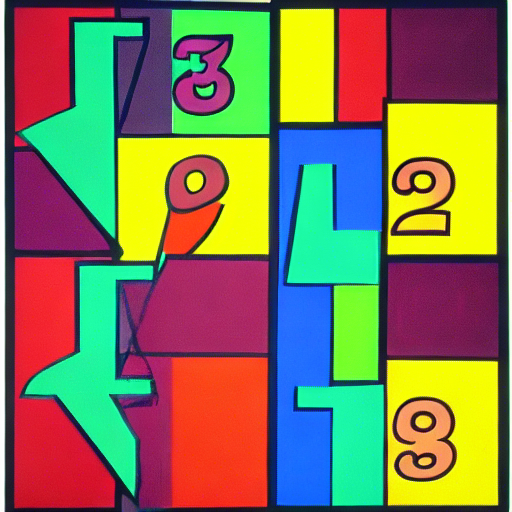

Postdocs |
 |
PhD StudentsFormer members(now professor at TU Eindhoven). (now postdoc at the University of Bologna). (now postdoc at the University of Magdeburg). (now postdoc at MPI MiS). (now substitute professor at HS Osnabrück). |
|